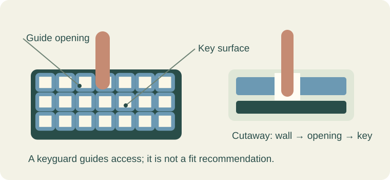
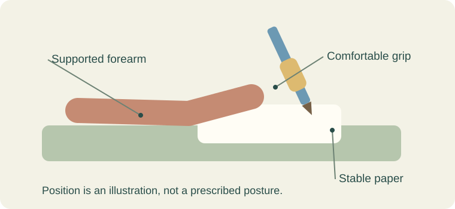
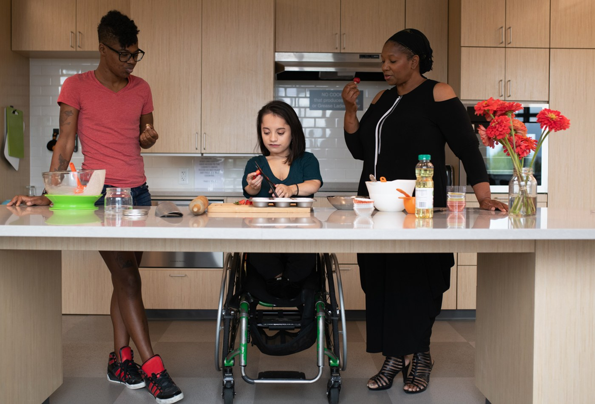

Everyday tasks
Choose an everyday task to try or learn about.
Explore movement beneath the surface.
A full 3D character and detailed knee, ankle and hand models. Rotate, pause, reveal structures and select a label to learn more.
Open the 3D Anatomy Studio →See what changes in your typing setup

Compare what feels easier.
Try the same short message with your usual setup, then an adaptation. Untimed and unscored. This comparison is your observation, not a clinical test.
My pace matters.
Nothing is timed. Practice text stays in this open page.
My usual setup
Use your own keyboard, device input or the standard practice keys. The lab never changes device settings.
0 turns filtering off. Applies to repeated character keys while typing and the practice buttons, not dictation or other applications. Backspace remains available.
Only pressing “Record comparison” saves a journal entry on this browser. No performance claim is made.
RNOH: computer access and writing adaptations. An OT can assess positioning, keyguards, switches or another input method.
Writing has a setup—not just a grip

A line can be a beginning.
For physical practice, place paper on a stable, non-slip surface and support your forearm as needed. Explore a comfortable pen or a grip aid with an OT. Try a short line or a large curve; no standard grip or letter shape is required.
The digital pad works with a mouse, touch or a stylus. You can also move a drawing cursor with buttons or arrow keys. It does not measure pressure, strength or movement quality.
RNOH writing aids guidance. Watch the writing and drawing tutorials.
The guide is a visual option, not a shape you must match.
The drawing is temporary until you download it. No drawing data is uploaded.
Explore a connection one stage at a time


Touch, align, connect—and know your support.
Try large, light pieces on a non-slip surface within easy reach. Explore touching and sliding before lifting or joining. Use easy-fit pieces and stop if connecting them needs force.
Hand function, balance and fatigue differ across CP. An occupational therapist can assess grip aids, stabilising surfaces and the task setup.
A pathway toward a heavier lifting goal
- Define the real object, height, distance, grasp and support needed with a physiotherapist or OT.
- Begin only with the rehearsal and load that they assess as appropriate. The tutorial shows a light empty-box rehearsal.
- If strengthening is appropriate, agree on progression, technique, assistance and stop signs with the clinician. The site does not set a universal safe weight.
- Consider reducing the load, using an assessed transfer aid, or asking for help. Do not carry a load when you need those hands for balance or a mobility aid.
The animation cannot assess your balance, bone health, joint stability or muscle tone. It does not demonstrate that a heavy lift is safe for you.
Open the connecting and lifting tutorials →